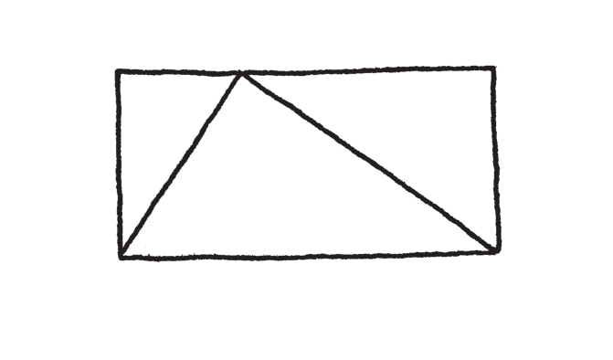
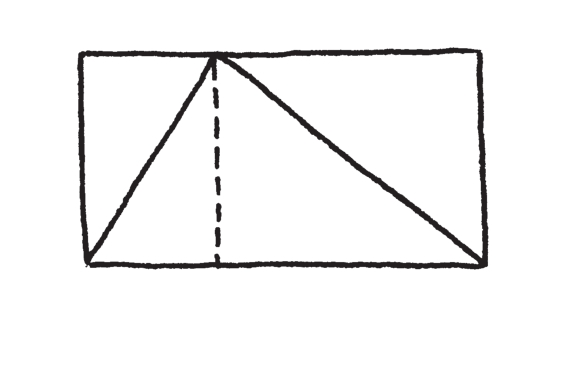
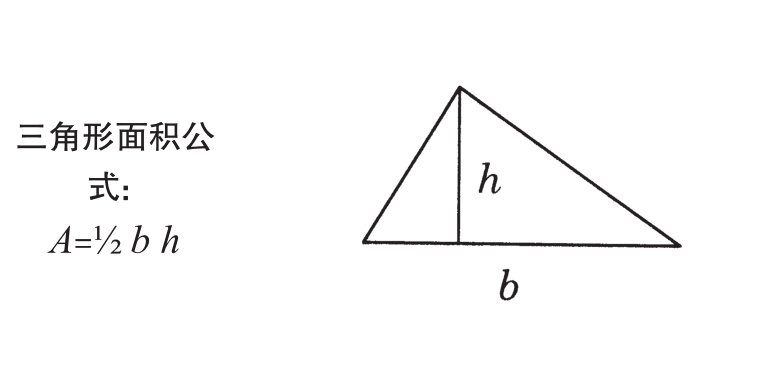

首先我们要了解，数学是一门艺术。数学和其他类型的艺术（如音乐和绘画）的差别只在于，我们的文化不认同数学是一门艺术。每个人都了解，诗人、画家、音乐家创造出艺术作品，以文字、图像及声音来表达自我。事实上，我们的社会对创造性的表达是相当大方的，建筑师、厨师、甚至电视导播都被认为是职业上的艺术家。那么，为何数学家不是呢？
这个问题，有一部分原因出在没有人知道数学家到底在做些什么。社会上的普遍认知似乎是，数学家和科学是有关联的——也许是因为数学家提供给科学家一些公式和定理，或者协助将一大堆数字输入计算机。如果这个世界必须要分成“诗意梦想家”和“理性思考家”两类人，毫无疑问，绝大多数人会把数学家放在后面那一类。[书籍分 享V 信zmxsh998]
然而，事实上，没有什么像数学那样梦幻及富有诗意，那样激进、具破坏力和带有奇幻色彩。我们觉得天文学或物理学很震撼人心，在这一点上，数学完全一样（在天文学家发现黑洞之前，数学家老早就有黑洞的构想了），而且数学比诗、美术或音乐容许更多的表现自由，后者高度依赖这个世界的物理性质。数学是最纯粹的艺术，同时也最容易受到误解。
因此，让我试着解释数学是什么，以及数学家做些什么。我以英国数学家哈代（G. H. Hardy）绝佳的叙述作为开场：
一位数学家，就像一位画家或诗人，是模式（pattern）的创造者。如果他的模式比画家或诗人的模式能留存得更久，那是因为这些模式是用理念（ideas）创造出来的。
所以数学家的工作是做出理念的模式（making patterns of ideas）。什么样的模式？什么样的理念？是关于犀牛的理念吗？不是的，那些留给生物学家吧。是关于语言和文化的理念吗？不，通常不是。这些对大部分数学家的审美观而言，都太复杂了。如果数学有一个统一的美学原则的话，那将是：简单就是美（simple is beautiful）。数学家喜欢思考最简单的可能性，而这种最简单的可能性是想象的，不见得是现实存在的。
例如，如果现在我在思考形状——这是我常常做的——我可能会想象在长方形中有一个三角形：

我想知道，这个三角形占据了长方形多少的空间——三分之二吗？重点是要了解，我现在探讨的不是长方形内有三角形的这幅画；我探讨的，也不是组成桥梁上梁柱架构的那些金属三角形。在此，并没有那些深谋远虑的实用目的存在，我纯粹就是在玩。这就是数学——想知道（wondering）、游戏（playing）、用自己的想象力来娱乐（amusing）自己。首先，三角形在长方形中占据了多少空间，甚至没有任何真实、实体上的目的。即使是最谨慎小心制造出来的实体三角形，仍然是不断震动的原子所组成的，它的形状每分钟都在改变。也就是说，除非你要探讨“近似”（approximate）的度量。好了，这里就会牵扯到数学的“美学”了。因为那样就不单纯了，它成为一个依赖真实世界各式各样细节的丑陋问题了。那些留给科学家去解决吧。数学提出的问题是，在一个想象的长方形中有一个想象的三角形。它们的形状边缘很完美，因为我要它们很完美——这就是我喜欢思考的问题类型。这就是数学的一个主要特征：你想要它是什么样，它就是什么样。你有无限多的选项，没有真实世界来挡路。
另一方面，一旦你做了选择（例如，我可能选择我的三角形是对称的，或不是对称的），然后，你这个新创造就会自行发展下去，不管你是否喜欢它的后续发展。这就是制造想象的模式时有趣的地方：它们会回应！这个三角形在长方形中占据了某个空间比例，而我完全无法控制这个比例为何。这个数字就摆在那里，可能是三分之二，可能不是，但可不是我说了算。我必须找出这个数字。
因此，我们可以玩玩看，想象一下我们要什么，然后做出模式，再对这套模式提出问题。但是我们要如何解答这些问题呢？这一点都不像科学，我没办法用试管、设备或是任何东西通过做实验来告诉自己，我想象出来的虚拟物的真相。能得知我们想象物的真相的唯一方法，就是运用我们的想象力，然而这是个艰苦的差事。
在这个例子中，我的确看到了简单又美妙的地方：

如果我把长方形像上面那样切成两个部分，我可以看到这两个部分都被三角形的斜边斜切成一半，所以三角形里面和外面的空间是相等的。也就是说，这个三角形一定是正好占了长方形的一半！
这就是数学的外貌和感觉。数学家的艺术就像这样：对于我们想象的创造物提出简单而直接的问题，然后制作出令人满意又美丽的解释。没有其他事物能达到如此纯粹的概念世界；如此令人着迷、充满趣味，而且不花半毛钱！
你也许要问了，我的这个想法又是从何而来的？我怎么知道要画那条辅助线？那我要问你了，画家又是怎么知道要在哪里画上一笔？灵感、经验、尝试错误、运气。这就是艺术，创造出那些有思想的美丽小诗，创造出那些纯粹理性的诗篇。这个艺术形态有着某种东西，能做如此神奇的转变。三角形和长方形之间的关系原本是个谜，然而那条小小的辅助线让谜底浮现了出来。我本来看不出来的，突然间我就看见了。然而，我能够从“无”当中创造出全然简单的美丽，并且在这个过程当中改变了我自己。这不正是艺术吗？
这就是为什么看到现在学校里的数学教育会让人如此痛心。这么丰富且迷人的想象力探索过程，却一直遭到贬抑，沦落成一套要死记硬背毫无生气的“事实”（facts），以及必须遵循的演算程序。关于“形状”的一个简单而自然的问题，一个富有创造性和收获的发明与发现的过程，却被取代为：

“三角形面积等于底乘以高的一半”，学生被要求死背这个公式，然后在“习题”中反复“应用”。兴奋之情、乐趣、甚至创造过程会有的痛苦与挫折，全都消磨殆尽了。再也没有任何“困难”了。问题在提出来的同时被解答了——学生没事可做。
现在，让我说清楚我到底在反对什么。不是公式，也不是背记一些有趣的事实。在某些情境下，这是可以的，就像学习词汇必须要记忆一样——这可以帮助我们创造更丰富、更微妙的艺术作品。但是，三角形面积是长方形面积的一半，这个“事实”并不重要。重要的是，以辅助线来切割的这个巧妙构思，以及这个构思可能激发出其他美妙的构思，进而引导出在其他问题上的创造性突破——光是事实的陈述绝不可能给你这些的。
拿掉了创造性的过程，只留下过程的结果，保证没有人能真正全身心投入这个科目。这就像是“说”米开朗基罗创造了美丽的雕塑却不让我“看”它。我要如何受到激发而产生灵感？（当然实际上还更糟——至少我还知道有一个雕塑艺术存在，只是不让我去欣赏它。）
由于将焦点集中在“什么”，排除掉“为什么”，数学被降格为一个空壳子。数学不是在“真相”里，而是在说明、论证之中。论证的本身赋予真相一个情境，并确认我们到底在谈论什么、其意义何在。数学是说明的艺术（the art of explanation）。如果你不让学生有机会参与这项活动——提出自己的问题、自己猜测与发现、试错、经历创造中的挫折、产生灵感、拼凑出他们的解释和证明——你就是不让他们学习数学。所以，我不是在抱怨我们数学课堂上出现的事实与公式，我抱怨的是我们的数学课里没有数学。
如果你的美术老师告诉你，绘画就是在标了数字的区块上涂上颜色，你会知道这是不对的。我们的文化让你了解这些——我们有博物馆、画廊，你自己家里也有挂画。我们的社会非常了解绘画是媒介，人类借由绘画来表达、展现自我。同样地，如果你的科学老师说，天文学是根据人们的出生日期来预测人们未来行为的一门学科，你会知道这个老师有问题——科学深入我们的文化，几乎每个人都知道原子、星系以及一些自然定律。但是如果你的数学老师给你一个印象，不管是直接说出来或是大家默认的，让你觉得数学是公式、定义以及背记一堆算法，谁来帮你矫正这个印象呢？
文化是自我复制繁衍的怪物：学生从他们老师那里学习数学，而老师又是从他们的老师那里学习数学，所以对于数学欠缺的了解与欣赏，会在我们的文化中无止境地复制下去。更糟的是，这种“伪数学”以及这种强调精准却无灵魂地操弄符号的延续，创造了自己的文化和自己的一套价值观。那些已经精熟这一套的人，从他们的成功当中衍生出了极大的自负。他们最听不进去的就是，数学其实是原始的创造力和美学的感受力。许多数学研究生在被人说“数学很强”说了十年之后，才发现自己其实没有真正的数学天分，只是很会遵循指示而已，他们感到伤心、失败。数学不是遵循指示，而是要创造出新的方向。
到现在我还没提到学校里缺乏数学评论这件事呢。学校里的数学教育，不让学生窥见数学的秘密，数学和任何文学作品一样，都是人类为了自己娱乐所创造出来的；数学作品需要批判性的评价；任何人都可以拥有对数学的审美品位，并发展出对数学的审美观。数学和诗一样，我们可以质疑它是否符合我们的美学原则：这项数学论证扎实吗？它有道理吗？它简单而优美吗？它能否让我更接近事实的核心？当然，在学校里没有对数学进行任何评论——因为根本就没有数学著作可供评论！
为什么我们不让我们的孩子学习如何评论数学呢？难道是我们认为数学太难了，不信任孩子的能力？我们似乎觉得他们有能力谈论拿破仑，并得出自己的结论，为什么对三角形就不能呢？我认为这只是因为我们的文化不了解数学。我们得到的印象是，数学是很冷酷而且需要高度技术性的东西，不可能有人搞得懂——如果这个世上真的有自我实现的预言，这就是一例。
我们的文化如果只是对数学无知，这已经够糟了，但更糟的是，人们真的以为他们了解数学——普遍地误以为数学对人类社会具有实用价值！这就已经构成数学和其他艺术之间的极大差异。数学被我们的文化看作是科学和技术的一种工具。大家都知道诗和音乐是纯粹用来欣赏的，能振奋人类的心灵，让我们的生命更高尚（因此在公立学校的课程安排中几乎都被拿掉了），但是数学则不然，数学是很“重要的”。
辛普利丘： 你的意思真的是说数学对社会没有用，或没有实用价值吗？[ a]
萨尔维阿蒂： 当然不是。我只是说一件事物如果有实际上的用途，并不表示它的本质就是如此。音乐可以让军人上战场，但这不是人们作曲的目的；米开朗基罗为天花板做装饰，我相信他心中其实有更崇高的目的。
[ ]a 译注：此处的人物对话系模拟伽利略的《关于托勒密和哥白尼两大世界体系的对话》。1632年，伽利略出版了《关于托勒密和哥白尼两大世界体系的对话》，这是一本以对话形式论辩的书，书中内容以三个人物的对话展开——辛普利丘（Simplicio，主张地球为中心说的亚里士多德学派支持者），萨尔维阿蒂（Salviati，主张太阳为中心说的哥白尼学派支持者）和沙格列陀（Sagredo，在这场辩论中持中立态度的博学智者）。但最后一位并未出现在此对话中。
辛普利丘： 但是我们不需要人们学习数学的实用结果吗？难道我们不需要会计师、木匠之类的人吗？
萨尔维阿蒂： 有多少人真正使用这些在学校里学的“实用的数学”呢？你认为外面的木匠使用三角函数吗？有多少成年人还记得分数的除法，或是如何解二次方程式呢？很显然，目前的实务训练课程根本就没用，因为它不但让人难以忍受地感到无趣，也根本没有人会去用它。因此，人们为什么会认为它很重要？让所有的人都“隐约”记得代数公式和几何图形，却“清楚”记得对它们的憎恨，我实在看不出这样的教育对社会有什么好处。然而，如果给人们展现美妙的事物，让他们有机会享受当一个有创造力、有灵活性、心胸开放的思想家——这是真正的数学教育可能提供的东西，这可能还有点好处。
辛普利丘： 但是人们日常生活中至少要会算账，不是吗？
萨尔维阿蒂： 我敢说大多数人在日常计算时都是使用计算机。为什么不用计算机呢？肯定是容易多了，而且更可靠吧。但是我的重点不只是说目前的制度非常糟糕，而是这个制度错失掉如此美好的东西！数学应该被当作艺术来教的。这些世俗上认为“有用”的特点，是不重要的副产品，会自然而然地跟着产生。贝多芬能够轻易地写出响亮的广告配乐，但是他当初学习音乐的动机是为了创造美好的事物。
辛普利丘： 但不是每个人都是当艺术家的料。那些没有“数学天分”的孩子怎么办？他们要如何融入你的计划呢？
萨尔维阿蒂： 如果每个人都能接触到数学的原始面貌， 沉浸在它所带来的挑战性乐趣及惊奇之中，我认为我们会看到学生对数学的态度有极大的转变，同时我们对“数学很强”
这个观念的定义，也会有极大的转变。我们已经失去了许多有潜能的天才数学家——那些抗拒看起来没意义又死板课程的有创造力又聪明的学生。他们因为太聪明了，不会浪费时间在这种无聊傻事上。
辛普利丘： 但是你难道不认为如果把数学课变得和艺术课差不多，会让大部分的孩子学不到东西吗？
萨尔维阿蒂： 他们现在就学不到什么东西呀！根本不要有数学课都强过现在这样的想法，至少有些人还能有机会靠自己去发现一些美好的东西。
辛普利丘： 那么，你是要把数学课从学校的课程中拿掉啰？
萨尔维阿蒂： 数学课早就被拿掉了！唯一的问题是要怎么处理剩下的这个死气沉沉的空壳子。当然，与其取消掉这门课程，我更想用生气蓬勃、有趣味的数学课来取代。
辛普利丘： 但是有多少数学老师具备足够的知识，可以用那种方式来教学呢？
萨尔维阿蒂： 很少。而且少得像是冰山的一角……>